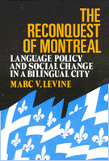

<body bgcolor="#FFFFFF" text="#000000" link="#0000FF" vlink="#CC0000" alink="#CC0000"><center><hr width="350" size="1" align="center" noshade>An examination of the nature of the linguistic transformation of Montreal and the role of public policy in promoting it<hr width="350" size="1" align="center" noshade><p><a href="https://cdcshoppingcart.uchicago.edu/Cart/ChicagoBook.aspx?ISBN=9780877227038&&PRESS=temple" target="_top">Buy this book!</a> | <a href="https://cdcshoppingcart.uchicago.edu/Cart/Cart.aspx?PRESS=temple" target="_top">View Cart</a> | <a href="https://cdcshoppingcart.uchicago.edu/Cart/Cart.aspx?PRESS=temple" target="_top">Check Out</a></p><p></p></center><!--none//--><h1>The Reconquest of Montreal</h1>
<H2>Language Policy and Social Change in a Bilingual City</H2>
<h3>Marc V. Levine</h3>
<P>cloth 0-87722-703-9 $54.50, Jun 90, <FONT COLOR=#990033>Out of Stock Unavailable</FONT>
<br>paper 0-87722-899-X $42.95, Aug 91, <FONT COLOR=#990033>Available</FONT>
<br>Electronic Book 1-43990-380-8 $42.95 <FONT COLOR=#990033>Out of Stock Unavailable</FONT>
<BR> 320 pp
8&nbsp;tables 1&nbsp;map(s)
</P><BLOCKQUOTE><I>"Levine's superb analysis of postwar Montreal language politics is...a model case study with significant implications both for urban development and socio-linguistics."</I>
<br>&#151<b><I>International Journal of Urban and Regional Research</I></b><I></I></BLOCKQUOTE>
<p>Although Montreal has been a bilingual city since 1760 and demographically dominated by French-speakers for well over a century and a quarter, it was not until the late 1960s that full-fledged challenges to the city’s English character emerged. Since then. two decades of agitation over <I>la question linguistique</I> as well as the enactment of three language laws have altered the places of French and English in Montreal‘s schools, public administration, economy. and even commercial signs. In this book, Marc Levine examines the nature of this stunning transformation and, in particular, the role of public policy in promoting it.
<p>The reconquest of Montreal by the French-speaking majority makes for interesting history. It includes episodes of intense conflict and occasional violence and tells the fascinating story of how an economically disadvantaged and culturally threatened linguistic community mobilized politically and used the state to redistribute group power in Canada’s second largest city. In addition, the history of Montreal’s language question offers analysts of urban politics and public policy an excellent case study of some of the central issues facing cities containing more than one major linguistic community.
<p>After tracing the politicization of the language question in the 1960s and 1970s, Levine analyzes the impact of the three controversial language laws penacted by the Quebec provincial government between 1969 and 1977. Exhaustively researched, <I>The Reconquest of Montreal</I> is the definitive study of the most explosive issue in Quebec political life.
<BR>&nbsp;<h2>Reviews</h2>
<p><I>"As an outsider as well as an academic, Levine is able to analyze the language situation more objectively than most local commentators of either of the main language groups. [His] comprehensive analysis of public policy measures affecting the relative positions of French and English in Montreal goes far beyond the mere language laws that Quebec has adopted since the late 1960s.... Anyone interested in language in Quebec will find it a valuable historical summation of a peaceful revolution, and a helpful explanation of why, and how, we've come to Bill 178."</I>
<br>&#151<b><I>Montreal Gazette</I></b>
<p><I>"Political scientists and economists...can learn much from historian Marc Levine.... [He] has a keen appreciation of major issues in political economy and a proper skepticism about simple explanations.... Levine's book is far richer than what can be captured in a short review. It is thoroughly researched, gracefully written, and carefully thought out. It is recommended to students of political economy, ethnic and minority relations, Canadian politics, and urban affairs&#151indeed to all those who have an appreciation for intelligent and sophisticated analysis."</I>
<br>&#151<b><I>American Political Science Review</I></b>
<BR>&nbsp;<h2>Contents</h2><P>
<p>A Note on Vocabulary
<br>Acknowledgments
<br>List of Abbreviations
<br>Note to the Paperback Edition
<br>Map of Montreal
<p>1. Introduction
<p>2. An English City: Montreal before the Quiet Revolution
<br><I>Urban Growth and Linguistic Diversity, 1760-1960 &#149
Linguistic Geography and the Two Solitudes &#149
Language Use and Language Choice through 1960 &#149
Language and the Economy: Historical Patterns &#149
The Politics of Language through 1960 &#149
Language Policy before 1960 &#149
Urban Governance and Linguistic Accommodation &#149
The Winds of Change: Language and Politics in the 1950s</I>
<p>3. The Quiet Revolution and the Politicization of Language
<br><I>The Roots of the Quiet Revolution &#149
Linguistic Tensions and the Quiet Revolution &#149
Francophone Demands for a Government Language Policy, 1960-1966 &#149
The Anglicization of Immigrants &#149
The Political Ramifications of Immigrant Anglicization</I>
<p>4. Linguistic Crises and Policy Responses, 1967-1969
<br><I>Policy Response I: Bill 85 &#149
Conflicts Become Crises: Linguistic Battles of 1969 &#149
Policy Response II: Bill 63 &#149
Language and the Restructuring of School Governance &#149
Conclusion</I>
<p>5. A Polarized City, 1970-1976
<br><I>Montreal 1970: A City in Turmoil &#149
The Federal Government and Montreal's Language Question &#149
Holding Action, 1970-1973 &#149
Bourassa Prepares to Act &#149
Bill 22: A Policy Disaster &#149
Conclusion</I>
<p>6. Bill 101 and the Politics of Language, 1977-1989
<br><I>The PQ Enacts a Language Policy &#149
Anglophones and Bill 101 &#149
Conflicts and Compromises in Language Policy, 1979-1985 &#149
Bourassa Reignites the Language Question, 1985-1989 &#149
The Impact of Bill 101: Education &#149
Conclusion</I>
<p>7. Public Policy, Language, and the Montreal Economy, 1960-1989
<br><I>The Quebec State and Francophone Economic Development &#149
State Corporations and Francophone Economic Development &#149
The Linguistic Impact of Public Works &#149
Closing the Linguistic Education Gap &#149
Language Policy and Regulation of the Private Sector &#149
Conclusion</I>
<p>8. The Francisation of the Montreal Economy
<br><I>The Language of the Workplace &#149
The Control of Capital &#149
The Socioeconomic Status of Francophones &#149
The External Face of Business &#149
Public Policy, Market Forces, and Economic Change &#149
Conclusion</I>
<p>9. English and French in the New Montreal
<br><I>Linguistic Demography, 1971-1986 &#149
The End of the Two Solitudes? &#149
The New Ethnicity and Francophone Montreal &#149
The New Francophone Class Structure &#149
Whither the Language Question</I>
<p>Notes
<br>Index
</P><BR>&nbsp;<H2>About the Author(s)</H2>
<P><b>Marc V. Levine</b> is Associate Professor of History and Urban Affairs and Director of the Urban Studies Program at the University of Wisconsin-Milwaukee.</P>
<BR><H2>Subject Categories</H2>
<p><A HREF="/tempress/political.html" TARGET="_top">Political Science and Public Policy</a>
<BR><A HREF="/tempress/urban.html" TARGET="_top">Urban Studies</a>
</p>
<BR><h2 class="inpageheading">In the series</H2>
<P><I><a href="http://www.temple.edu/tempress/conflicts.html" onMouseOver="window.status='Click for other books in this series!'; return true;" onMouseOut="window.status=''; return true;" target="_top">Conflicts in Urban and Regional Development</a></i>, edited by John R. Logan and Todd Swanstrom.
</p><p><i>Conflicts in Urban and Regional Development</i>, edited by John R. Logan and Todd Swanstrom, includes books on urban policy and issues of city and regional planning, accounts of the political economy of individual cities, and books that compare policies across cities and countries.</p>
<p align="center"><a href="https://cdcshoppingcart.uchicago.edu/Cart/ChicagoBook.aspx?ISBN=9780877227038&&PRESS=temple" target="_top">Buy this book!</a> | <a href="https://cdcshoppingcart.uchicago.edu/Cart/Cart.aspx?PRESS=temple" target="_top">View Cart</a> | <a href="https://cdcshoppingcart.uchicago.edu/Cart/Cart.aspx?PRESS=temple" target="_top">Check Out</a></p><p><font face="Arial" size="1"><a href="copyright.html" onMouseOver="window.status='Web Copyright Policy';return true;" onMouseOut="window.status=''" title="Web Copyright Policy">&copy;</a> 2015 <a href="http://www.temple.edu" target="new" onMouseOver="window.status='Link to Temple University home page';return true;" onMouseOut="window.status=''" title="Link to Temple University home page">Temple University</a>. All Rights Reserved. http://www.temple.edu/tempress/titles/718_reg.html</font></p>